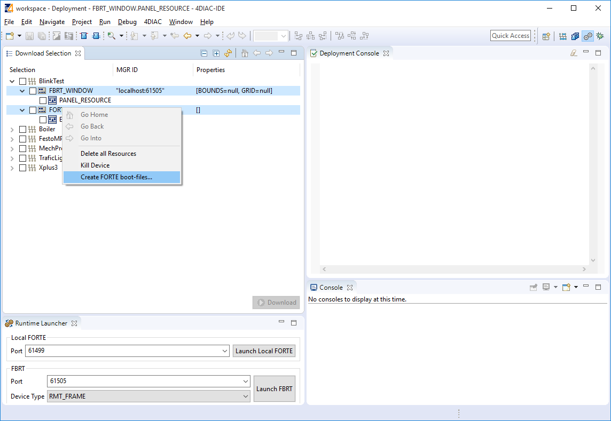
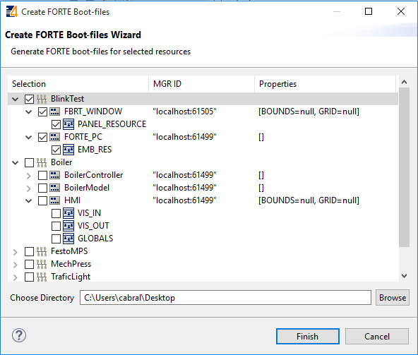

Step 5 - Other Basic Features
This page is part of a guide that gives a walk-through over the major 4diac IDE features.
This page shows the following interesting features in 4diac IDE that might improve your work:
Import an Existing System
Existing Systems can be imported as follows:
-
Start 4diac IDE with the desired Workspace
-
Select File/Import/Existing Projects into Workspace and press Next
-
Choose the folder that contains the folder with the System you want to import
-
Mark the desired System within the project field below
-
If your project is not yet within your workspace and if you do not want to modify the original version of your project, mark Copy Projects into workspace and press Finish. Consider that if you did not check Copy Projects into workspace and you delete your System within 4diac IDE, your System will be deleted permanently.
-
Verify that the System is completely there, that is the System Configuration with the Devices and Resources as well as the Application with FBs and both event and data connections.
Import Existing IEC 61499 Types
By default, new systems contain a copy of the IEC 61499 types in the tool-library. If different types are needed, for example from another project or another IEC 61499 engineering tool, these type files can be easily added by copying them into the project directory to the desired location. Furthermore, the Type Navigator allows to drag and drop types between projects as well as within a project to a different folder.
Creating Boot-Files
When the option FORTE_SUPPORT_BOOTFILE is enabled for the 4diac FORTE you are using, on startup 4diac FORTE tries to load a so called boot-file.
This boot-file has to be located in the same directory as your 4diac FORTE binary and needs to be named forte.fboot.
This file contains the FB network configuration for the device and will be automatically instantiated during startup of 4diac FORTE.
In order to create such boot-files, you need to select one or more devices or resources in the Download Selection View and select from the context menu.

In the wizard, you can then select the devices and resources for which you wish to create boot-files as well as the directory where to place them.

On pressing one boot-file will be created per device. This boot-file will contain the selected resources and the FB networks contained in the resources. As only the resources selected are included in the boot-file, you can have a larger set of resources during development (e.g., for test-code) and use only the main resources for the boot-file. The name of the boot-file will be a combination of system and device name dot fboot. Before using it you need to rename it to forte.fboot.
Where to go from here?
-
The last step is optional, and shows some advanced features of 4diac IDE that you might use in more complicated applications:
Step 6 - Advanced Features -
If you want to see some examples, the following link is an index of the available examples in the documentation:
4diac Examples -
If you have a specific platform that has input and outputs that is supported by 4diac FORTE, for example a Raspberry Pi or a PLC, and you want to use them, go to following page:
I/O Configuration Parameters for Different Platforms -
If you want to use a specific communication protocol supported by 4diac FORTE, for example MQTT, OPC UA, Modbus and so on, go to this page:
Supported Communication Protocols -
If you want to go back to see again how to create your own Function Blocks, here’s a link:
Step 4 - Create Your own Function Block Types -
If you want to go back to the Start Here page, we leave you here a fast access:
Where to Start